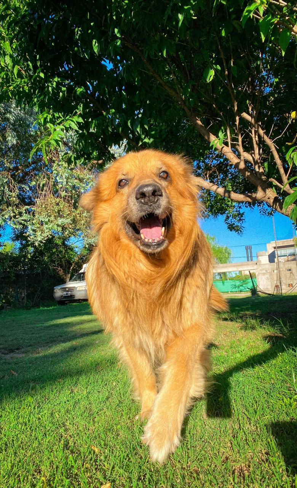
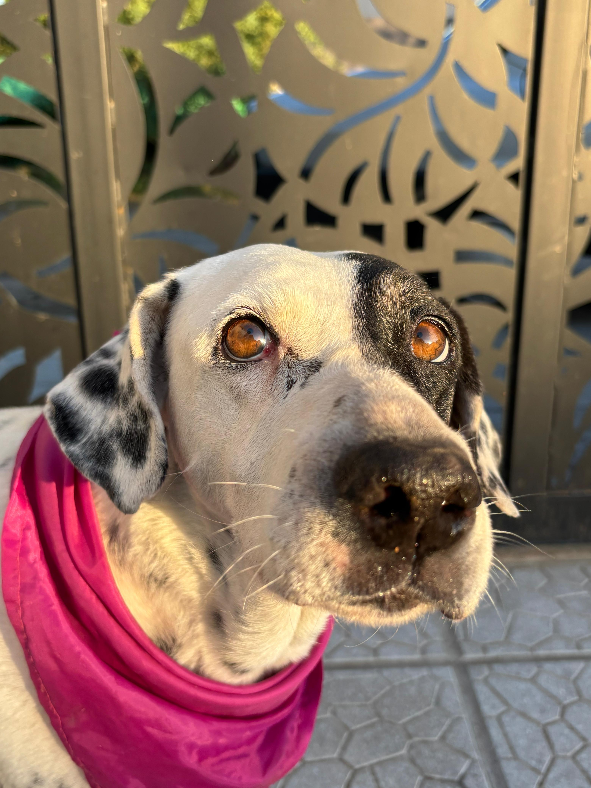
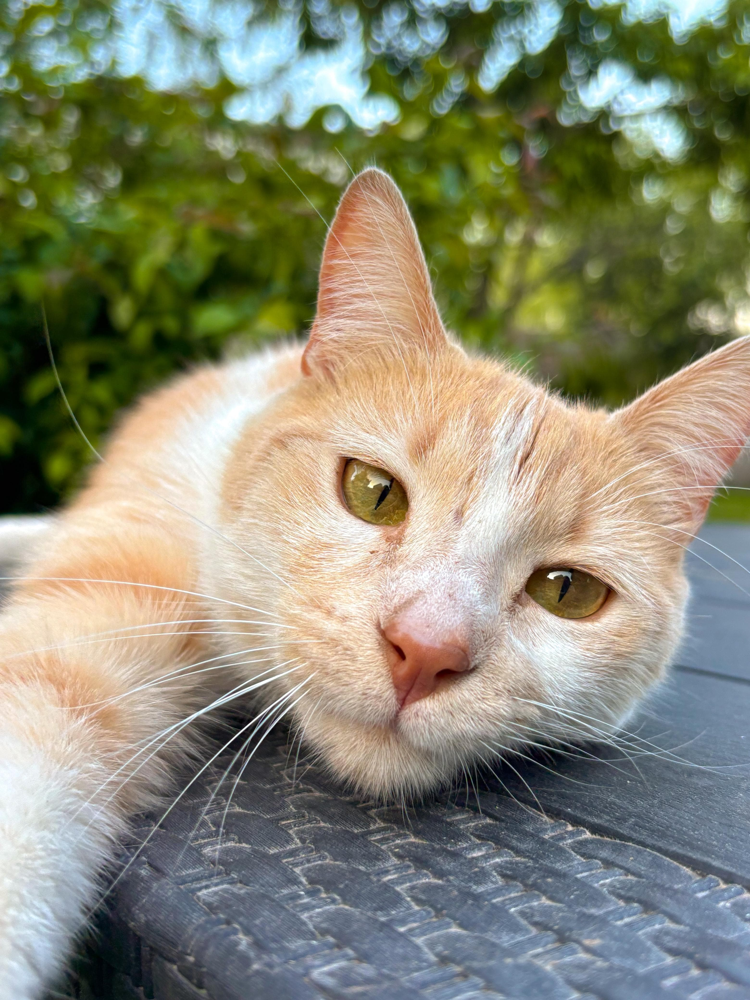
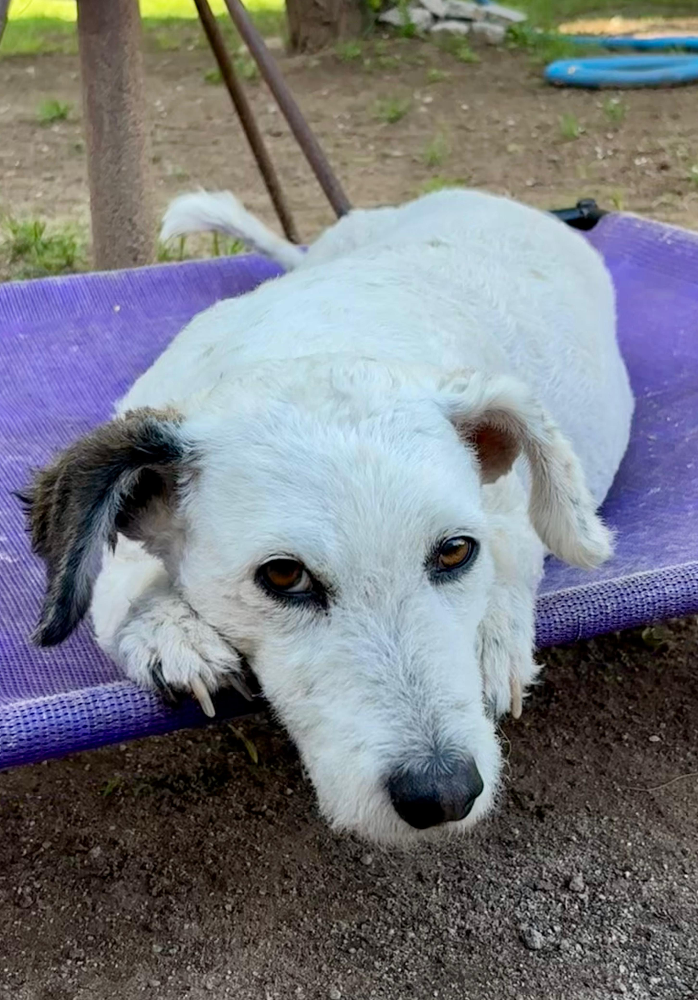
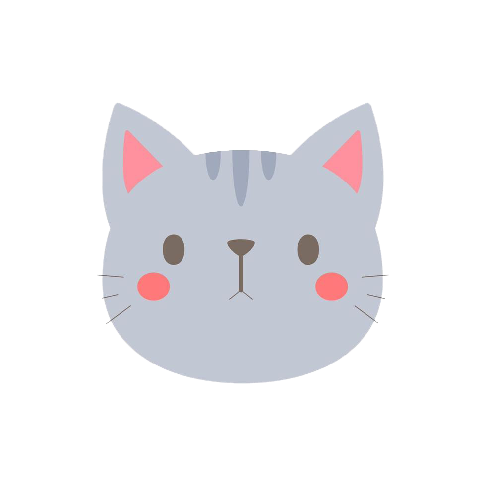
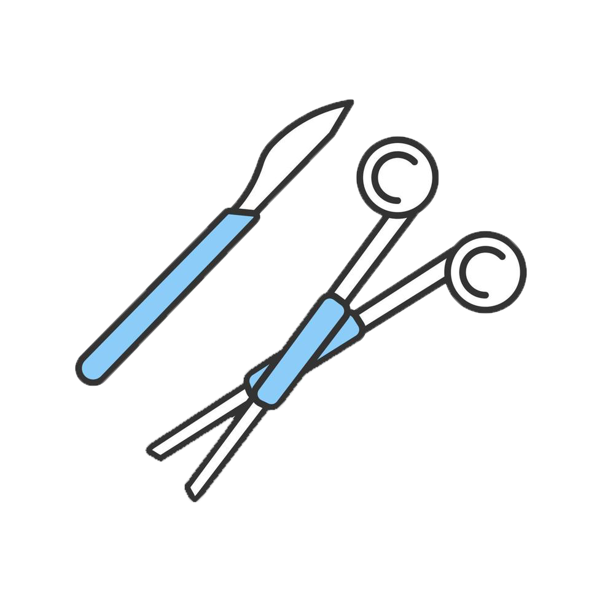

Tips para cuidar a tu mascota
Descubre consejos prácticos para garantizar el bienestar de tu compañero peludo. ¡Pequeños gestos hacen grandes diferencias!
Testimonios

🐶 Timo: “Llevamos a Timo por una infección en la oreja y lo atendieron con muchísimo cuidado. Es un perro muy mimoso y se portó genial durante toda la consulta. ¡Gracias por la paciencia y el cariño con él!”
Nadia Martinez
🐶 Manchas: “Manchas tenía dolor de panza y en la veterinaria lo diagnosticaron rapidísimo. Siempre fue muy protectora con nosotros, y ver cómo la trataron con respeto nos tranquilizó un montón. ¡Ya está como nueva!”.
Micaela Fidalgo


🐱Lío: “Lío tuvo una conjuntivitis leve y nos atendieron súper rápido. Aunque es algo desconfiado, se dejó revisar sin problema gracias a la calma del equipo. Es un gato muy inteligente y sensible.”
Valentino Bustos
🐶 Floppy: “Floppy fue por una revisión de rutina. Es muy tranquila y observadora, y la veterinaria la trató con muchísima dulzura. ¡Nos encanta traerla acá porque se nota el amor por los animales!”
Gianluca Francos

Beneficios exclusivos por ser parte de nuestra clínica
- ✔️ Descuentos especiales en consultas
- ✔️ Vacunación gratuita anual
- ✔️ Prioridad en emergencias
- ✔️ Acceso a talleres educativos


Un poco de nosotros
Con más de 30 años de experiencia en el campo veterinario, nos destacamos como referentes en el cuidado de las mascotas. En nuestra clínica, el compromiso con la salud y el bienestar animal es primordial. Contamos con más de 25 especialidades médicas, que abarcan desde medicina interna y cirugía hasta dermatología y oftalmología. Nuestro equipo está compuesto por más de 50 profesionales altamente calificados, todos enfocados en brindar el máximo cuidado posible a su mascota.